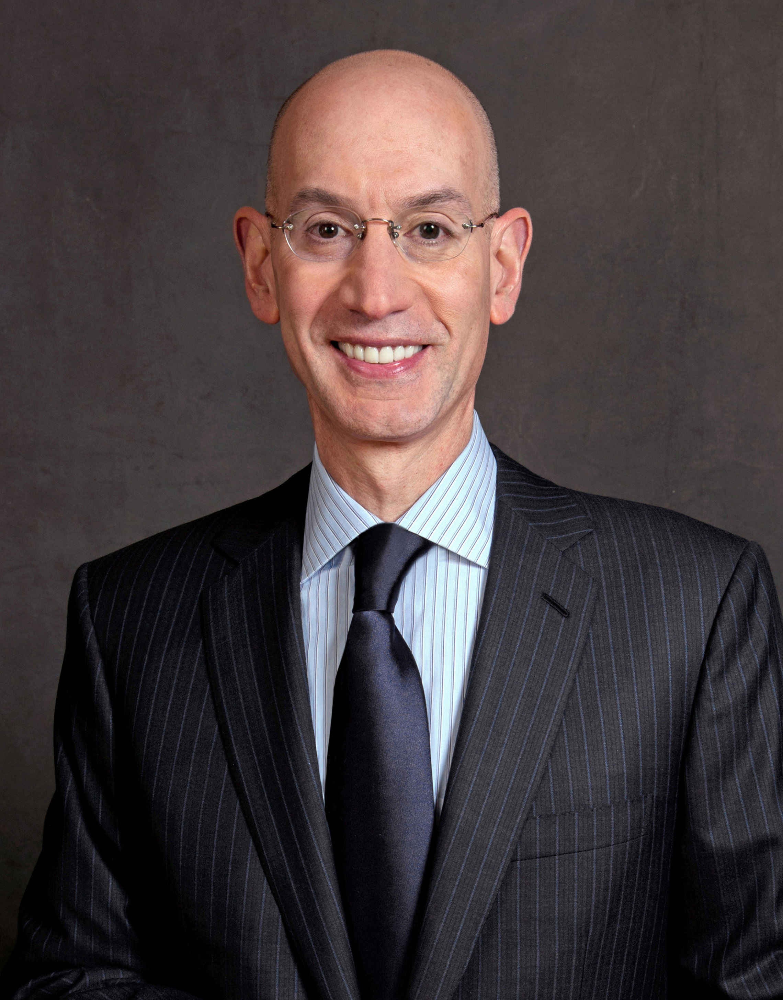

Adam Silver (born April 25, 1962) is an American lawyer and sports executive who serves as the fifth and current commissioner of the National Basketball Association (NBA). He joined the NBA in 1992 and has held various positions within the league, becoming chief operating officer and deputy commissioner under his predecessor and mentor David Stern in 2006. When Stern retired in 2014, Silver was named commissioner.
During Silver's tenure, the league has continued to grow economically and globally, especially in China. Silver made headlines in 2014 for forcing Donald Sterling to sell the Los Angeles Clippers, and then banning Sterling for life from all NBA games and events following racist remarks.